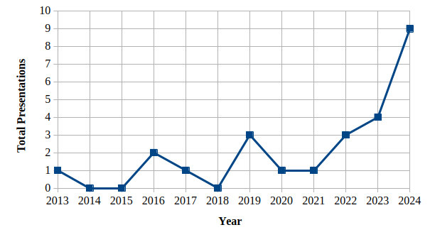

People have been talking about iXML for a few years now and it’s become a re-occurring topic at markup conferences (see Figure 2, “Frequency of Presentations on iXML”[1]). In my case, I was looking for a new personal project and curious to find out whether iXML would live up to the hype.
Figure 2. Frequency of Presentations on iXML
|  |
Also, I suspect that I may be able to use iXML to simplify an existing pipeline that converts family tree data from GEDCOM to XML. GEDCOM itself is a standard, with a grammar, and although it can be used to serialise data as XML or text, it seems that the text option is most common; it’s certainly the only option for exporting from Ancestry.com, which is where I maintain my family trees.
For an in-depth consideration of why you, or a client, might want to use iXML, see past papers on the topic, particularly Steven Pemberton's original proposal for Invisible XML, that he presented at Balisage in 2013[PEM2013].
[1] At Balisage, Declarative Amsterdam, Markup UK, XML London and XML Prague. For the full list, see Chronological List of Past Papers on Invisible XML